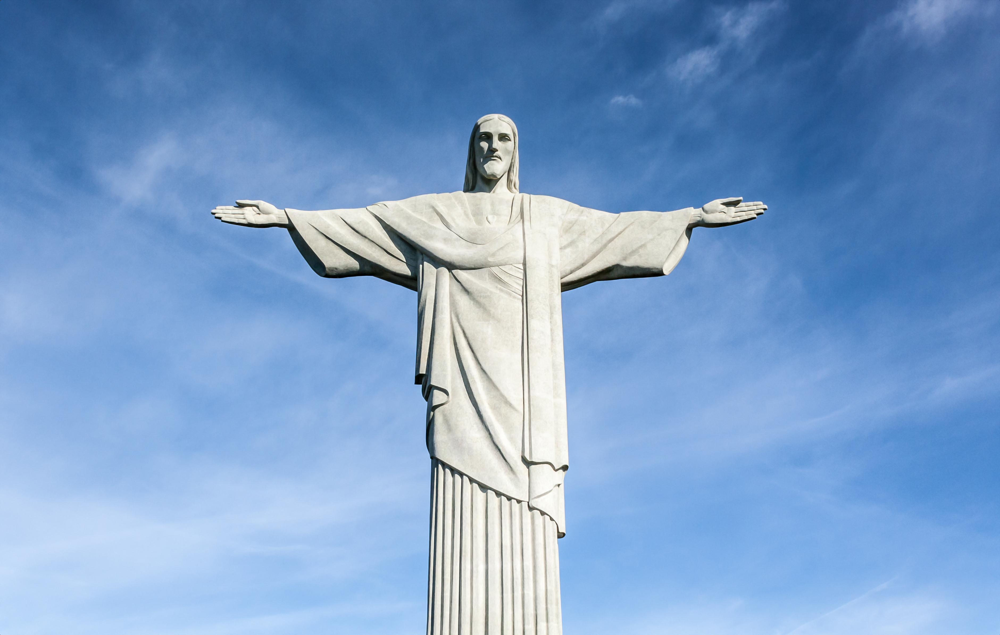

El Cristo Redentor no sólo es uno de los símbolos de Brasil sino que también se ha convertido en una de las 7 maravillas del mundo moderno. Esta escultura de más de 1000 toneladas de peso y 30 metros de altura, puede verse desde todos los rincones de Río de Janeiro. Construida en arte deco en 1931, está situada en el antiguo mirador del Corcovado, que ya era un punto turístico de primer orden de la ciudad antes de la construcción de la estatua. Por su ubicación, al Cristo Redentor también se le conoce como Cristo del Corcovado.Situado dentro del Parque Nacional de la Tijuca, se puede acceder mediante un nuevo sistema de escaleras mecánicas, construido en 2003.